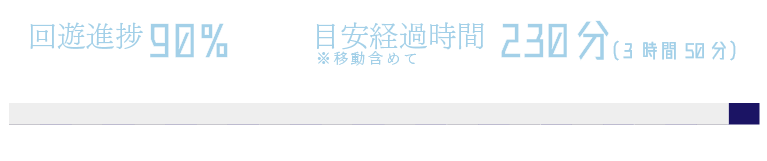
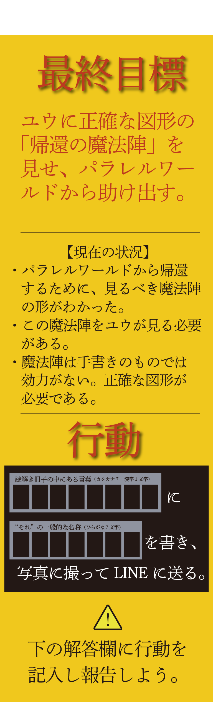
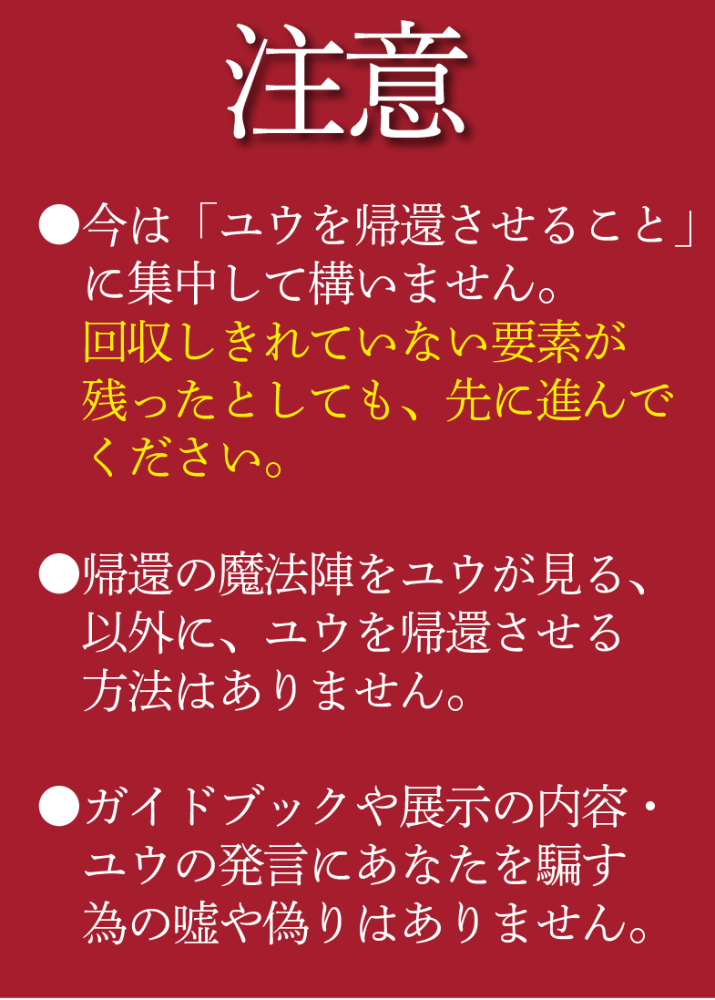
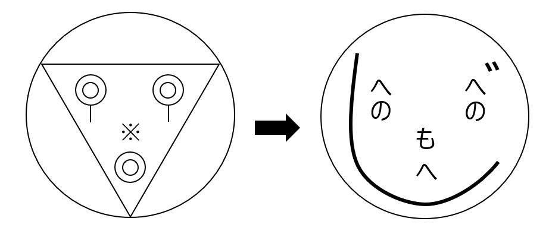

魔法陣を書くにあたっては、外側の大きな円と、その中身の要素に分けることができる。
まず外側の大きな円について考えよう。
どこかにパソコンで正確に作図されて、かつ中身の要素を入れることができる、まっさらな円が冊子に載っているので、探してみよう。
謎解きラリーの冊子の裏表紙を見ると、「クリアスタンプ欄」があり、中に何も書かれていない円となっている。
冊子として印刷されている以上、パソコンを使って正確に作図されているのでこれを使っていこう。
よって行動の前半の空欄には「クリアスタンプ欄」が入る。
あとは中身の要素を考える必要がある。
手書きの魔法陣は効力がないとは言うものの、それは手書きをしてはいけないという意味ではない。
たとえ手書きであっても、最終的にユウが魔法陣を見た時に正確な図形になっていれば問題ない。
では、手書きが正確な図形になるにはどうすればいいか考えよう。
魔法陣の中身は「◎」「｜」「※」「▽」で構成されている。
この図形をどこかで見ていないだろうか。
「◎」「｜」「※」「▽」を正確に書く必要はない。
ある現象を使えば、手書きで書いた何かが、正確な形の「◎」「｜」「※」「▽」に変わる。
今まで何かが「変わってしまう」という現象を何度も見てきたはずだ。
それを活用しよう。
ユウとのLINEを思い出すと、「強制的に文字が変換される」現象が起きていた。
その現象は私からユウに文章や写真を送信するときにも起こることがわかっている。
そこで、「◎」「｜」「※」「▽」に対応する文字をユウに送れば、文字の変換が起きて正確な図形を見せることができる。
LINEを見返して、わたしが作成した対応表を参照すると、
「◎→へ」「｜→の」「※→も」「▽→じ」と対応している。
魔法陣の中身を、対応するひらがなに変換するとこのようになる。
